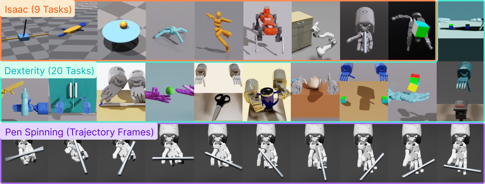
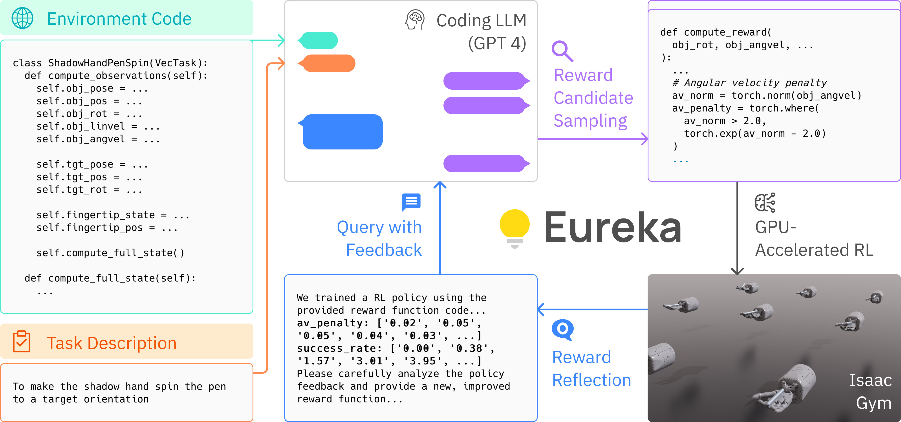
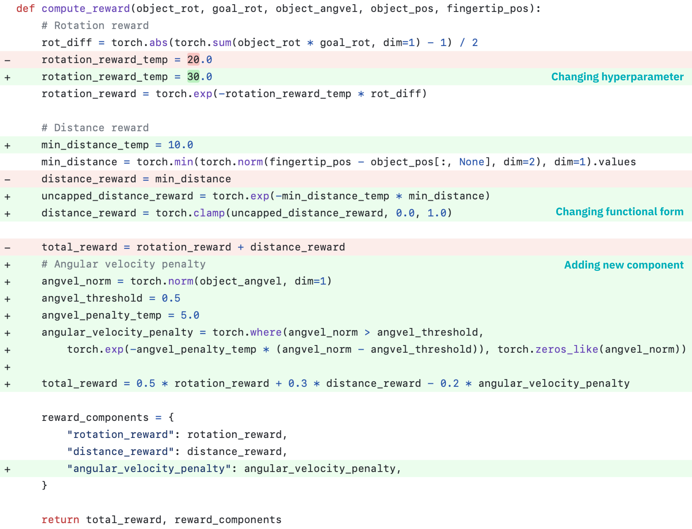
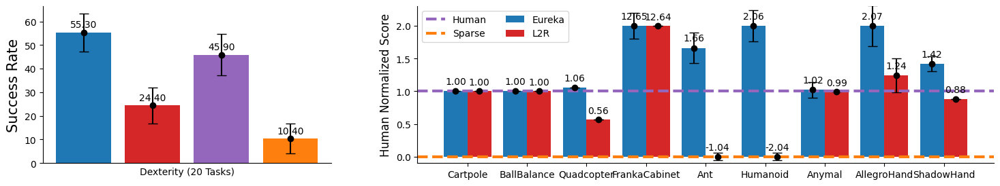

Eureka: Human-Level Reward Design via Coding Large Language Models
Generated by JarvisForResearchers Bot on 2026-05-01
TL;DR
EUREKA is a novel reward design algorithm powered by coding Large Language Models (LLMs) that autonomously generates human-level reward functions for complex reinforcement learning tasks through evolutionary optimization.
The Problem
Harnessing Large Language Models (LLMs) to learn complex low-level manipulation tasks remains an open problem. Concurrently, designing effective reward functions for Reinforcement Learning (RL) is notoriously difficult. Empirical data suggests this difficulty is significant: 92% of polled RL researchers report relying on manual trial-and-error for reward design, and 89% indicate that the rewards they design are sub-optimal.
Prior efforts have shown limitations. Existing attempts to leverage LLMs for low-level manipulation tasks often necessitate substantial domain expertise to construct appropriate task prompts or are restricted to learning only simple skills. Furthermore, prior work such as L2R (Yu et al., 2023) is constrained by its reliance on templated rewards, lacking the expressivity afforded by EUREKA's free-form generation capabilities. Ultimately, manual reward engineering is a tedious process that frequently yields sub-optimal rewards, leading to undesirable emergent behaviors in the trained policy.
Key Contributions
We present three primary contributions. First, EUREKA achieves human-level performance in reward design across a diverse suite of 29 open-sourced RL environments, which encompass 10 distinct robot morphologies. Crucially, it outperforms expert human rewards on 83% of these tasks, achieving an average normalized improvement of 52%. Second, EUREKA successfully solves dexterous manipulation tasks, such as pen spinning, for which manual reward engineering has historically been infeasible. This was demonstrated using a simulated Shadow Hand within a curriculum learning framework. Third, the framework enables a novel gradient-free in-context learning approach to Reinforcement Learning from Human Feedback (RLHF). This approach generates more performant and human-aligned reward functions based on various forms of human input without requiring any underlying model updating.
How It Works

Figure 1: EUREKA generates human-level reward functions across diverse robots and tasks. Combined with curriculum learning, EUREKA for the first time, unlocks rapid pen-spinning capabilities on an anthropomorphic five-finger hand.
Figure 2: EUREKA takes unmodified environment source code and language task description as context to zero-shot generate executable reward functions from a coding LLM. Then, it iterates between reward sampling, GPU-accelerated reward evaluation, and reward reflection to progressively improve its rew
Figure 3: EUREKA can zero-shot generate executable rewards and then flexibly improve them with many distinct types of free-form modification, such as (1) changing the hyperparameter of existing reward components, (2) changing the functional form of existing reward components, and (3) introducing new
Figure 4: EUREKA outperforms Human and L2R across all tasks. In particular, EUREKA realizes much greater gains on high-dimensional dexterity environments.EUREKA operates by employing a coding LLM, such as GPT-4, to zero-shot generate executable reward functions. This generation process is conditioned on the raw source code of the target environment, which is provided as context. This initial generation is not the final step; it is followed by an iterative evolutionary search process. In each iteration, reward candidates are sampled, evaluated using GPU-accelerated distributed RL running on IsaacGym, and subsequently refined via a mechanism termed reward reflection. Reward reflection serves to provide automated, textual feedback that summarizes the policy training dynamics. This feedback allows for targeted editing and progressive improvement of the reward code directly within the LLM's context window.
Environment as Context
This component involves directly feeding the raw source code of the RL environment—specifically excluding the existing reward code—to the LLM. This architectural choice enables the LLM to perform zero-shot generation of executable reward functions tailored precisely to the environment's dynamics and state representation.
Evolutionary Search
The evolutionary search mechanism drives the refinement process. It iteratively proposes and refines reward candidates by sampling independent outputs from the LLM. The process incorporates in-context reward mutation, where the best-performing reward from the preceding iteration is used to guide the generation of the next set of candidates.
Reward Reflection
Reward reflection functions as an automated feedback loop. It summarizes the policy training dynamics into a textual format by tracking scalar values associated with all reward components and the overall task fitness function at various intermediate policy checkpoints during training. This textual summary is then fed back into the LLM context to guide targeted reward code editing.
Results
The empirical evaluation demonstrates the efficacy of the EUREKA framework across varied robotic tasks.
| Metric | Value | Baseline | Source |
|---|---|---|---|
| Outperformance on Isaac tasks | Exceeds or performs on par to human level | Human | Figure 4 |
| Outperformance on Dexterity tasks | Outperforms human level on 15 out of 20 tasks | Human | Figure 4 |
| Average normalized improvement | 52% | Human experts | Abstract |
Why This Matters for Robotics
The ability to autonomously generate high-quality, task-specific reward functions addresses a fundamental bottleneck in applying RL to complex robotic systems. By treating the LLM as a universal reward programming algorithm, EUREKA removes the necessity for extensive, expert-driven reward engineering. This capability is particularly transformative for dexterous manipulation, where defining a precise reward function is often intractable. Furthermore, by enabling a gradient-free RLHF paradigm, EUREKA allows for the incorporation of nuanced human preferences into the reward structure without the computational overhead or stability concerns associated with full model fine-tuning.
Limitations & Open Questions
Two primary limitations warrant discussion. First, there is a possibility that the initial reward function generated by the LLM may not always be syntactically or semantically executable, even if the LLM's generation appears plausible. Second, the performance of EUREKA exhibits a measurable degradation when GPT-4 is replaced by GPT-3.5, which strongly suggests a dependency on the advanced coding and reasoning capabilities inherent in high-quality, large-scale LLMs. Future work must address robustness against non-executable outputs and explore methods to mitigate the reliance on the largest available proprietary models.
Citation
Paper: 2310.12931
@article{231012931,
title = {Eureka: Human-Level Reward Design via Coding Large Language Models},
author = {Yecheng Jason Ma and William Liang and Guanzhi Wang and De-An Huang and Osbert Bastani and Dinesh Jayaraman et al.},
journal = {arXiv preprint arXiv:2310.12931},
year = {2023},
url = {https://arxiv.org/abs/2310.12931}
}